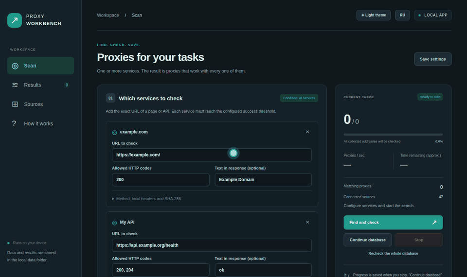

Proxy Workbench collects public HTTP, HTTPS, SOCKS4 and SOCKS5 proxies from 55 open lists and web pages, tests every one against your own sites, rates anonymity and drops blacklisted IPs, all on your own machine.

A proxy passes only if it works for every service you list: status codes, required text in the body, even a SHA-256 of the response. Captcha pages with status 200 don't pass.
Every working proxy is rated elite, anonymous or transparent through an echo “judge” page. Keep only elite ones with one click.
A local IP/CIDR denylist and optional DNSBL zones flag blacklisted addresses before they reach your export.
Several attempts per service, median latency, jitter and success rate combined into one quality score.
Bounded worker queue and rate limiter, tested with 190,000 candidates. Progress lives in SQLite, so stopping never loses work.
TXT, CSV, JSON plus http.txt, https.txt, socks5.txt in plain host:port format for your scraper or browser.
Fast proxies that survive re-checks, come from lists with a good record and appear in few lists go to the top: less crowded, so they live longer.
Optional speed test in Mbit/s; every proxy shows its provider, and hosting or data-centre ranges can be skipped.
Pick country, protocol and a sticky session in the proxy user name: country-de-session-1. Or script it: proxy-workbench get --top 5.
Point a browser, Telegram or any app at 127.0.0.1:8899: every connection goes out through the next working proxy, dead ones are skipped.
GET /random?protocol=socks5&country=DE returns a fresh working proxy, so scripts and bots pick one with a single request.
The site sees neither your IP nor any sign of a proxy.
Your IP is hidden, but the proxy announces itself with Via or X-Forwarded-For.
Your real IP is passed to the site. Avoid these for anything private.
Your own public IP is learned with one direct request to the judge and kept in memory only. It is never written to the database, exports or logs.
Windows: the .exe from the latest release, nothing else needed. Anywhere else: pipx install git+https://github.com/DavidVoitenko/proxy-workbench, or Docker Compose.
Double-click the .exe or run proxy-workbench: the interface opens in your browser, together with the local API and the rotating proxy.
Add your site, press Find and check, then download the best proxies from the Results tab.
Prefer the terminal or a server?
# command line
./run.sh run --url https://example.org/health --judge-url http://judge.example/azenv.php --min-anonymity elite
# Docker (CLI only)
docker build -t proxy-workbench .
docker run --rm --user "$(id -u):$(id -g)" -v "$PWD/data:/app/data" proxy-workbench run --url https://example.org/healthThe interface listens on 127.0.0.1 only. No accounts, no telemetry, no cloud backend.
Source downloads are size-limited, redirects are validated and private or metadata IPs are blocked.
It measures availability and latency. A public proxy still sees your traffic, so never send passwords through one.